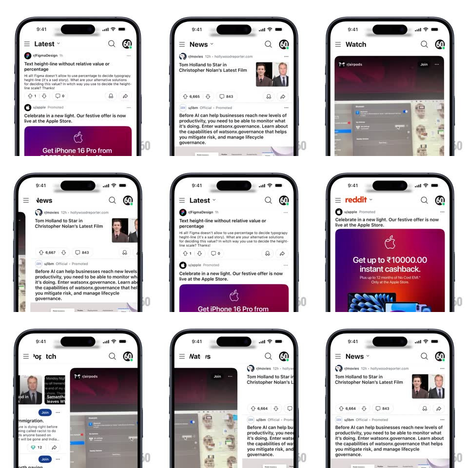

Media
Frame-by-frame

Rebuild this interaction 1:1: Reddit's swipe-to-tab switch - a horizontal swipe anywhere on the feed slides between feeds (Latest, News, Watch, Popular) while the header title transitions in sync with the drag.

Rebuild this interaction 1:1: Reddit's swipe-to-tab switch - a horizontal swipe anywhere on the feed slides between feeds (Latest, News, Watch, Popular) while the header title transitions in sync with the drag.
## Integration
Integration: stack-agnostic spec - springs given as stiffness/damping, timed motions as duration + curve; map every value to your framework and animation library of choice.
## Scene
The Reddit home surface: header with hamburger, the current feed title with a dropdown chevron ("Latest v", "News v", "Watch v", "Popular v"), search and avatar right; below, the feed's posts (text posts, image posts, promoted cards). Each feed is a distinct content type - Watch is video cards, Popular leads with a Trending Today row.
## Motion spec
Pattern: edge-to-edge gesture pager with synced title morph.
- Horizontal drag: the current feed follows the finger 1:1 while the neighbor feed slides in from the dragged edge - both visible mid-swipe.
- The header title transitions continuously with drag progress: the outgoing title slides up and fades as the incoming slides in from below (cross-position at 50% drag) - mid-swipe you see both titles stacked.
- Release past 40% (or with fling velocity): the swipe completes - feeds settle (spring ~400/24, 250ms) and the new title finishes its rise with a small overshoot.
- Release under threshold: everything springs back (spring ~400/26) - the title reverses mid-transition.
- Tapping the title opens the feed dropdown instead - same title, different affordance.
## Calibration
- Title movement is coupled to drag distance, not time - it scrubs with the finger.
- Feeds keep their scroll position when swiped away and back.
## Reduced motion
Feeds crossfade; title swaps without vertical travel.
## Don't miss
- The chevron next to the title stays fixed - only the word transitions.
- The swipe works from any horizontal start point on the feed, not just the edges.